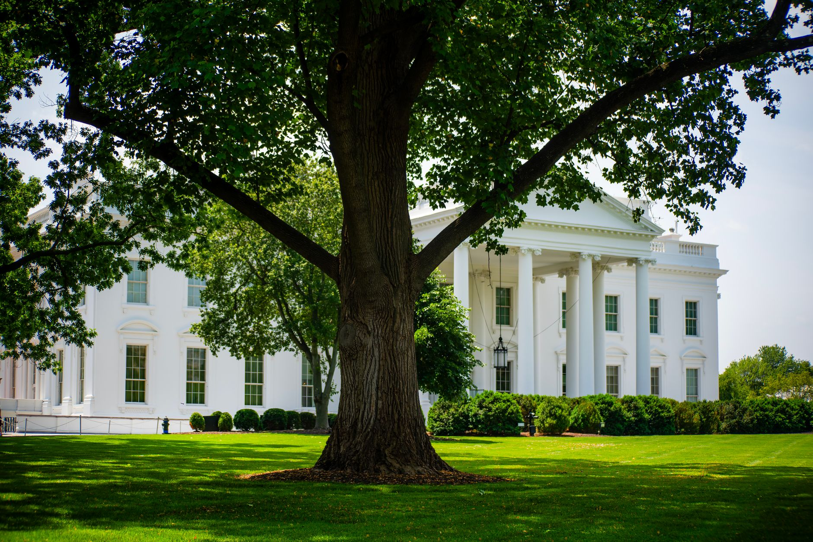

A major shift in US foreign policy
In a move that has sent shockwaves through international diplomatic circles, Donald Trump has decided to waive several key sanctions previously imposed on Russia. This decision marks a significant departure from the previous administration's stance and signals a potential rebranding of American engagement with the Kremlin. The timing of this announcement is particularly notable, as it coincides with a period of intense scrutiny regarding how the United States manages its foreign interests in Eastern Europe.
Analysts suggest that this maneuver is part of a broader strategy to reshape the existing global order. By easing the economic pressure on Moscow, the administration appears to be seeking a different kind of leverage, one that moves away from traditional punitive measures and toward a more transactional form of diplomacy. This shift has left many allies wondering how the balance of power will redistribute in the coming months.
The specific sanctions being waived include several measures targeting energy sectors and financial institutions that were designed to isolate the Russian economy. While the administration argues that these steps are necessary to facilitate new negotiations, critics argue that it weakens the collective resolve of the Western alliance.
Rising tensions with President Zelensky
While the easing of sanctions is one side of the coin, the other is the intensifying row between the Trump administration and Ukrainian President Volodymyr Zelensky. The relationship, which was once defined by a shared goal of supporting Ukrainian sovereignty, is now fraught with disagreements over the future of military aid and the terms of any potential peace settlement.
The divergence in political objectives between Washington and Kyiv has created a diplomatic vacuum that is being rapidly filled by uncertainty and strategic maneuvering.
Zelensky has expressed profound concerns regarding the implications of these sanction waivers, suggesting that they may undermine Ukraine's position at the negotiating table. The Ukrainian leadership has long maintained that economic pressure is one of the few effective tools available to limit Russian aggression, and any rollback is viewed as a setback for national security.
The economic implications of the decision
The decision to waive sanctions is not merely a political statement; it has tangible economic consequences that will be felt across the globe. The energy markets, in particular, are expected to react sharply to the news. As Russian commodities potentially find easier paths back into the international market, the volatility seen in recent years may shift in unexpected directions.
Financial institutions are also bracing for impact. The removal of certain restrictions allows for a more fluid movement of capital, which could either stabilize certain markets or lead to increased risk-taking by investors looking to exploit the new regulatory environment. The long-term effects on the global banking system remain a subject of intense debate among economists.
Global reactions and diplomatic fallout
The international community has reacted with a mixture of confusion and alarm. European leaders, who have been heavily invested in maintaining a unified front against Russian influence, are now facing the difficult task of reconciling their own security needs with the new direction of American policy. Some nations are calling for emergency summits to discuss a unified response, while others are quietly assessing how to adapt to this new reality.
In Moscow, the reaction has been one of cautious optimism. The Kremlin has long viewed the sanctions as an illegal tool of Western hegemony, and the decision to waive them is seen as a validation of their long-standing arguments. This could potentially open doors for a renewed dialogue, though the sincerity of such talks remains to be seen.
Looking ahead at the geopolitical landscape
As we move forward, the primary question remains whether this shift will lead to a sustainable peace or simply a temporary lull in hostilities. The tension between Trump and Zelensky is likely to continue, serving as a barometer for how much influence the United States is willing to exert in the region. The coming months will be critical in determining if this is a permanent pivot or a tactical pause.
The world is watching closely as the pieces of this global puzzle are rearranged. Whether through economic shifts or direct diplomatic confrontations, the decisions made today will echo through the halls of power for years to come. It is a time of profound uncertainty, where the rules of engagement are being rewritten in real-time.
In a world where unpredictable events can change lives instantly, we often see how small decisions lead to massive consequences. Much like the tragic and unexpected nature of the news in the report regarding the British Father Fined After Son's Fatal Cyprus Hotel Fall, political shifts can have ripple effects that no one truly anticipates. Staying informed is the only way to navigate these complex global changes.
See Also
If you enjoyed this Current Events article, check out British Father Fined After Son's Fatal Cyprus Hotel Fall for more useful reading.